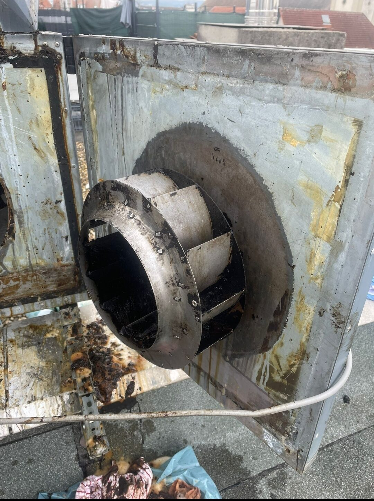
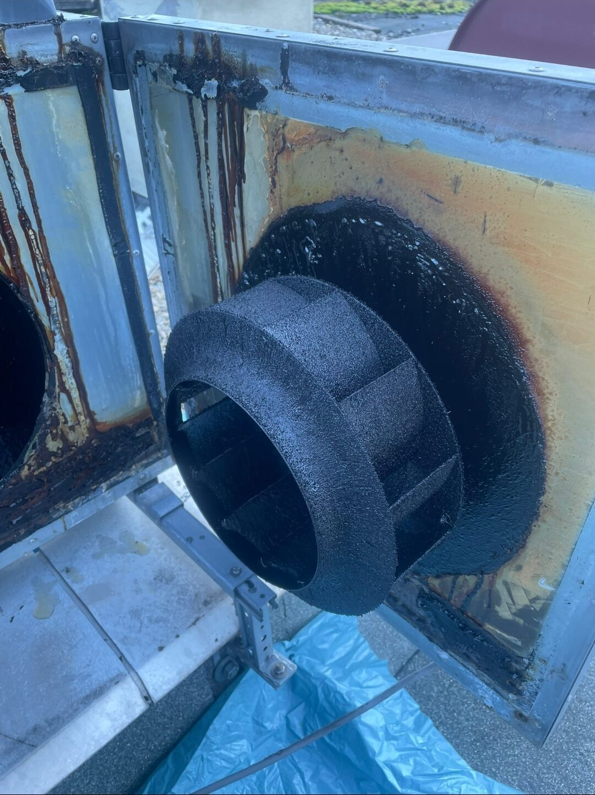

Vor dem Austausch
Korrodiertes Ventilatorrad einer Dachanlage.
Korrodiertes Ventilatorrad einer Dachanlage.
Regelmäßige Reinigung und abgestimmte Pflege können Teil eines strukturierten Maschinen- und Anlagenbetriebs sein. KAANTEC übernimmt unterstützende Reinigungs- und Wartungsleistungen im vereinbarten Umfang.
Angebot anfragenAlle LeistungenRegelmäßige Reinigung verlängert die Lebensdauer von Maschinen und beugt Störungen vor. Typische Aufgaben im Bereich Maschinenwartung:
Vor Beginn werden Maschine, Zugänge, Verschmutzung und der zulässige Leistungsumfang abgestimmt. Arbeiten, die eine besondere Fachqualifikation oder Herstellerfreigabe erfordern, werden entsprechend abgegrenzt.
Staub, Späne und Produktionsrückstände setzen sich mit der Zeit an Maschinen und deren Umfeld ab. Das kann Verschleiß begünstigen, die Wärmeabfuhr beeinträchtigen und im schlimmsten Fall zu Störungen führen. Regelmäßige, auf die Maschine abgestimmte Reinigung ist daher ein einfacher, aber wirksamer Baustein, um Anlagen länger zuverlässig zu betreiben.

Jede Maschine hat eigene Anforderungen. Typische Aspekte unserer Arbeit:
Berücksichtigung zulässiger Reinigungsverfahren je nach Maschine.
Reinigung von Bereichen, die ohne Demontage sicher erreichbar sind.
Klare Trennung zwischen Reinigung und technischer Wartung mit Freigabe.
Reinigung im Rahmen geplanter Stillstände oder Pausen.
Wir unterstützen bei unterschiedlichsten Maschinentypen und -umgebungen.
Reinigung von Maschinenumfeld und zugänglichen Komponenten.
Reinigung von Förderanlagen und angrenzenden Bereichen.
Reinigung technischer Antriebs- und Lüftungskomponenten.
Individuelle Reinigungslösungen nach Absprache.
Nein, technische Wartungsarbeiten mit Herstellerfreigabe erfolgen durch qualifizierte Fachfirmen. Wir übernehmen unterstützende Reinigungsleistungen.
Ja, wir stimmen das Reinigungsverfahren auf die jeweilige Maschine und geltende Vorgaben ab.
Die Kosten hängen von Maschinentyp, Zugänglichkeit und Verschmutzungsgrad ab. Nach kurzer Abstimmung erhalten Sie ein transparentes Angebot.
Ja, wir stimmen den Termin gerne auf Ihre Wartungsfenster oder Produktionspausen ab.
Auf Wunsch dokumentieren wir die ausgeführten Arbeiten nachvollziehbar.
Die Bilder zeigen reale Anlagen und Reinigungsarbeiten und dienen der fachlichen Einordnung des jeweiligen Leistungsbereichs.

Beschreiben Sie kurz Ihre Anlage, den Bereich oder die Verschmutzung. Sie sprechen dabei direkt mit Ihrem festen Ansprechpartner – unverbindlich, ohne Vorabkosten und ohne Verkaufsdruck.